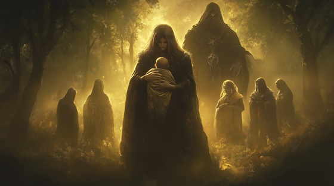

In Greek mythology, Rhea is the sister and consort of Cronus, and the mother of the first Olympian gods. After Cronus overthrew his father Uranus, he ruled in fear of prophecy: that he too would be overthrown by his child. To stop fate, he devoured each of his offspring the moment they were born—Hestia, Demeter, Hera, Hades, and Poseidon.
Rhea, heartbroken and furious, resolved to save her sixth child. When Zeus was born, she hid him in a cave on the island of Crete and gave Cronus a stone wrapped in swaddling cloth, which he swallowed in ignorance.
This act preserved the spark that would eventually ignite rebellion against the Titans. Rhea, often overlooked in myth, stands as a silent architect of divine justice—a mother who chose resistance over despair.
The Curse in the Blood
I bore them wrapped in stars and flame
But every cry you turned to shame
A mother’s gift, a tyrant’s meal
You swallowed love you could not feel
You feared the child, you feared the flame
But cursed the womb that bore your name
The curse is in the blood you spill
A throne of fear, a hunger still
But deep in earth, one light remains
The storm you tried to drown in chains
I watched the cradle empty bare
Five sacred names lost to your stare
I wept alone, I hid my breath
But one child slipped the jaws of death
You fed on prophecy and lies
But fate has wings you won’t defy
The curse is in the blood you spill
A throne of fear, a hunger still
But deep in earth, one light remains
The storm you tried to drown in chains
I gave him stone, I gave him sky
You ate the trick, and left him high
Raised on milk and sacred fire—
He’ll climb the world to end your pyre
CRONUS (growling): “You dare defy your king, your god?”
RHEA: “I dare protect what gods forgot.”
The curse is in the blood you spill
A throne of fear, a hunger still
But deep in earth, one light remains
The storm you tried to drown in chains
So sleep, my child, the world will wake—
And thunder rise for justice’s sake